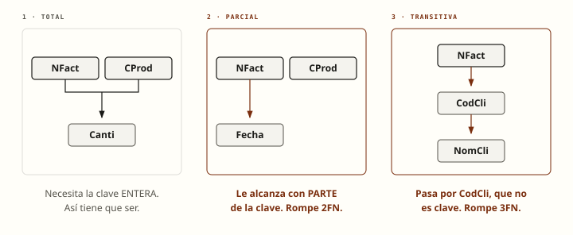

Lección 20 · Unidad 3 · Diseño de Base de Datos
Dependencia funcional: la única herramienta que vas a usar
Las tres formas normales son tres preguntas sobre lo mismo. Si entendés esto, no tenés que memorizar ninguna de las tres.
01Qué dice una flecha
Se escribe X → Y y se lee "X determina Y". La definición
formal de Elmasri es más útil de lo que parece:
"Dos tuplast1yt2que cumplen quet1[X] = t2[X], deben cumplir también quet1[Y] = t2[Y]."
Traducido a algo que podés usar mirando una tabla:
X → Y vale si no puede haber dos filas con el mismo X y distinto Y.
Si encontrás dos filas que empatan en X y difieren en Y, la dependencia no vale.
Volvé a la tabla de la lección 19:
CodCli 3 aparece con NomCli Carlos, Carla y Carlitos.
¿Vale CodCli → NomCli?
Sí vale. Y los datos que la contradicen son justamente el error a corregir.
Elmasri lo dice con todas las letras: una dependencia funcional
es una propiedad de la semántica o significado de los atributos
.
La declara el diseñador porque entiende el negocio, y después el DBMS la hace cumplir.
No se descubre mirando los datos: se decide mirando la realidad.
Los datos sirven sólo en una dirección: para refutar una dependencia que creías que valía, o para detectar que los datos están sucios. Nunca para confirmarla.
02Los tres tipos que importan
De todas las dependencias que hay en una tabla, la normalización sólo mira tres formas. Cada una corresponde a una forma normal.

(NFact, CProd) — por eso los dos primeros paneles
la muestran completa. Fijate que el problema nunca es la flecha en sí:
es de dónde sale.
| Tipo | Definición | Rompe |
|---|---|---|
| Total (o completa) |
Sale de la clave entera. Si le sacás cualquier atributo a la clave, la dependencia deja de valer. | Nada. Es lo correcto. |
| Parcial | Le alcanza con parte de la clave. Sacándole un atributo a la clave, la dependencia sigue valiendo. | 2FN |
| Transitiva | Va de la clave a Y pasando por un atributo Z que no es clave: clave → Z → Y. |
3FN |
Si la clave primaria es de un solo atributo, no puede haber dependencias
parciales — no hay "parte de la clave". Elmasri lo dice explícito:
si ésta contiene un único atributo, no es necesario aplicar la verificación
.
Es decir: en una tabla con clave simple, 2FN se cumple sola. Sólo tenés que revisar 3FN. Eso te ahorra la mitad del trabajo en cualquier ejercicio.
03Cómo se saca el mapa de dependencias
Este es el procedimiento que conviene hacer antes de tocar nada. Sobre la tabla de facturación:
-
Identificá la clave primaria. ¿Qué combinación mínima de atributos no se repite?
Acá:
(NFact, CProd)— un renglón es una factura más un producto. - Para cada atributo no clave, preguntá "¿de qué depende de verdad?" No de qué está al lado en la tabla: de qué depende en el negocio.
- Clasificá cada respuesta con la tabla de arriba.
| Atributo | Depende de | Tipo |
|---|---|---|
Canti | (NFact, CProd) | Total ✓ |
Fecha | NFact | Parcial |
CodCli | NFact | Parcial |
Descri | CProd | Parcial |
NomCli | CodCli | Transitiva |
PUnit | depende del negocio | a decidir |
Ese cuadro es la normalización. Los tres pasos que vienen no hacen más que ejecutarlo: cada dependencia que no sea total contra la clave se va a llevar sus atributos a una tabla propia.
04Práctica
En una tabla ves dos filas con el mismo CProd y distinta
Descri. ¿Qué concluís?
Clave primaria (NFact, CProd). Sabés que CProd → Descri.
¿Qué tipo de dependencia es respecto de esa clave?
Una tabla tiene clave primaria de un solo atributo. ¿Qué podés afirmar sin revisar nada?
Elmasri & Navathe, 5ª ed. — sección 10.2.1 "Definición de dependencia
funcional" (pág. 292) y las definiciones de dependencia total/parcial en 10.3.5 y
transitiva en 10.3.6 (págs. 304–305).
En el PDF de raw/: páginas 318 y 330.
Es el capítulo más formal de la materia y el que más rinde leer con lápiz. La Figura 10.3 es el mapa de dependencias que estamos imitando acá.
Soy tu profe acá. Pasame cualquier tabla y sacamos juntos el mapa de dependencias. Es el ejercicio que más rinde de toda la unidad: si el mapa está bien, las tres formas normales salen solas.